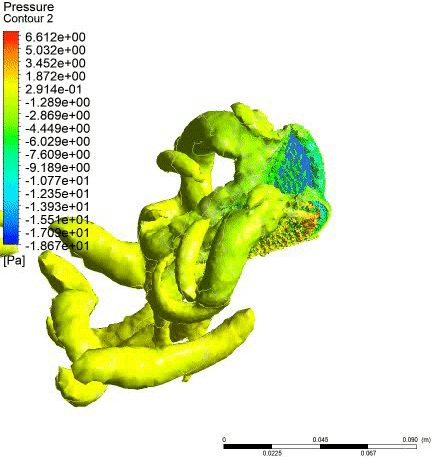
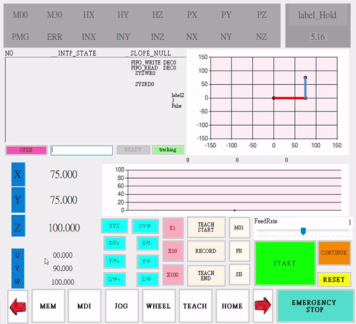
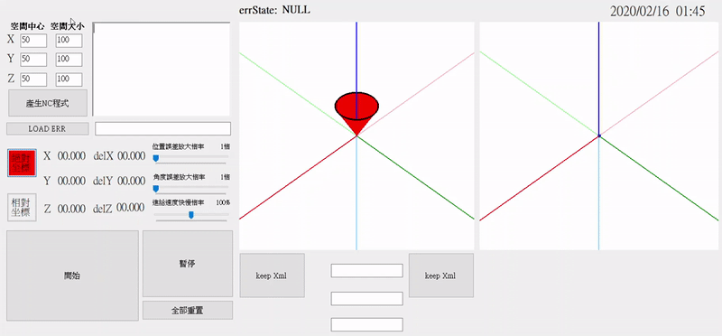
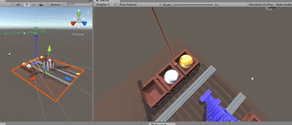

楊東穎(Brandon Yang)
臺灣大學機械工程研究所就讀中/清華大學動力機械工程學系/師大附中
0989127216

toin0918@gmail.com
專案成果
蝴蝶飛行研究[Fluent、C]

利用高速攝影拍攝蝴蝶飛行動態，並使用ANSYS Fluent進行仿真模擬，探討不同翅膀外型如何影響空氣動力，藉此優化微飛行器之效率。(碩士研究專題)
機電整合控制程式[C]

導入CNC控制人機介面，以狀態機模擬與操控三軸晶圓取放機(模擬包含速度規劃與連桿運動)。
機械手臂誤差可視化[C#]

利用六軸動作感測機構(MMD)量測機械手臂運動軌跡，計算機構誤差，並搭配openTK作圖，將誤差可視化(圖中的圓錐代表假想刀具，若無誤差則會保持在原點，其會跟隨誤差值而移動，右圖則為刀具進給規劃路徑，可以透過鍵盤轉換視角)。
3D版踩地雷遊戲[Unity]

全新打造3D版踩地雷，透過人物移動去找出所有地雷，木棧板的功用為辨識出地雷位置，當找完所有地雷則贏得勝利，若不甚踩到地雷則會爆炸。
吊車打保齡球[Unity]

使用吊車吊起軌道旁的球，以人偶為球瓶，當球將人偶撞倒時，會給予評分。
停車遊戲[Unity]

必須精準地停至停車格內，評分標準包含:位置、角度、是否撞到、使用時間等。